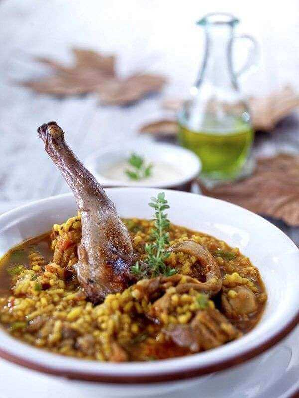

Arroz con conejo caldoso

Descripcion
Guiso de arroz tradicional caldoso con carne de conejo, que le da un sabor especial y maravilloso a nuestras comidas.
Ingredientes
- 1 conejo de campo troceado o conejo de granja
- 500g de arroz bomba
- 3 tomates maduros
- 2 hojas de laurel, una rama de tomillo y una de romero
- 2 pimientos choriceros
- 1 cda. de pimenton de la Vera dulce
- 1 pimiento verde
- 1/2 cebolla
- 2 dientes de ajo
- 250ml de vino blanco y 50ml de vinagre de vino
- Sal y pimienta negra al gusto
- Aceite de oliva virgen extra
- 1900ml de agua
Preparacion
- Trocear y limpiar bien el conejo, en trocos pequeños, casi que no haga falta usar el cuchillo para comerlo.
- Picamos la cebolla y el pimiento verde en trocitos pequeños y pelamos los dientes de ajo (iran enteros)
- En un bol ponemos a macerar el conejo de campo troceado con el vino blanco, la cebolla, el pimiento, los dientes de ajo, el tomillo, laurel, romero, sal, pimienta negra recien molida, un buen chorro de aceite de oliva virgen extra y un chorrito de vinagre de vino. Reservar en la nevera 12h.
- Ponemos los pimietnos choriceros en un cuenco con agua para que se rehidraten. Las dejaremos unos 30 minutos hasta que esten totalmente hidratadas. Reservamos
- Transcurrido el tiempo, sacamos la carne y colamos el caldo de la maceracion. Reservamos la verdura y colemos el caldo (que emplearemos para el arroz)
- Mientras se cocinan las verduras, preparamos el resto de ingredientes. Retiramos los pimientos choriceros del agua y eliminamos las semillas interiores. Con la punta del cuchillo o una cucharilla vamos separando la carne interior.
- Ahora se salpimenta el conjeo y en una cazuela ancha ponemos el conejo con aceite.
- Doramos a fuego lento para sellarlo bien y que luego quede la carne jugosa. Cuando este bien dorado retiramos y reservamos.
- En la cazuela donde hemos dorado el conejo agregamos un buen chorro de aceite y ponemos las verduras a pochar.
- Agregamos los trozos de conejo a la cazuela y rehogamos todo bien. Cuando veamos que la cebolla y los pimientos estan casi cocinados, agregamos el tomate pelado y troceado.
- Es hora de introducir la carne de los pimientos choriceros y el pimenton de la Vera. Juntamos los ingredientes muy bien y vertemos el caldo con el vino y el vinagre que hemos colado de la maceracion. Tambien le ponemos el laurel, tomillo y romero.
- Cocinar a fuego lento durante media hora. Se le puede agregar mas agua en caso de necesidad.
- Agregamos el agua a la cazuela. En los arroces caldosos usaremos grano bomba y agregaremos un minimo de 4 veces agua.
- Ponemos a tope la temperatura y agregamos el arroz cuando empieze a hervir.
- Removemos al echarlo y cuando rompa a hervir de nuevo bajamos a fuego medio. Cocemos unos 20 minutos.
Home